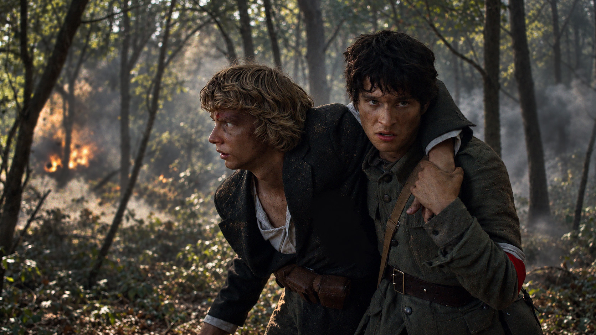
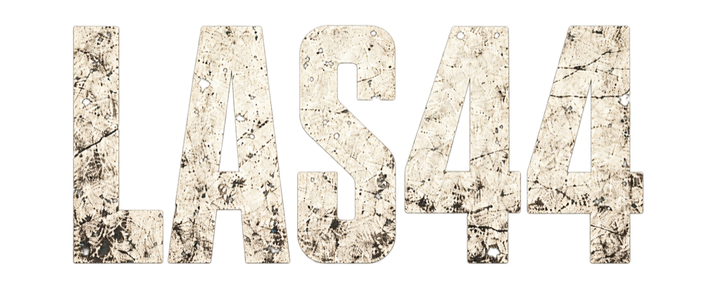

Produkcja filmowa
Od dokumentacji i scenariusza po zdjęcia i postprodukcję. Rozwijamy filmowe opowieści o polskiej historii.
Stowarzyszenie Obrazy Historii
Przywracamy pamięć o ludziach i wydarzeniach, które zasługują na własną opowieść. Naszym językiem jest film.
Poznaj naszą misję
Puszcza Biała, 1944

Historia przyjaźni, odwagi i walki o przetrwanie.
Inspirowana wspomnieniami żołnierza Armii Krajowej.
O nas i naszej misji
Wierzymy, że za wielką historią zawsze stoi człowiek. Jego wybory, emocje i doświadczenia.
Stowarzyszenie Obrazy Historii powstało, by przybliżać polską historię, kulturę i dziedzictwo poprzez kino. Naszą główną działalnością jest przygotowywanie, produkcja i koprodukcja filmów fabularnych i dokumentalnych.
Chcemy ocalać wspomnienia, przywracać pamięć o mniej znanych wydarzeniach i łączyć pokolenia. Tworzymy przestrzeń współpracy dla filmowców, historyków, instytucji kultury i wszystkich, którym bliska jest pamięć o przeszłości.
Od dokumentacji i scenariusza po zdjęcia i postprodukcję. Rozwijamy filmowe opowieści o polskiej historii.
Utrwalamy relacje, wspomnienia i materiały archiwalne, by zachować je dla kolejnych pokoleń.
Naszą misję realizujemy także poprzez nieodpłatne pokazy, spotkania z twórcami i działania edukacyjne.
Aktualności
Publikacje w mediach i u naszych patronów.